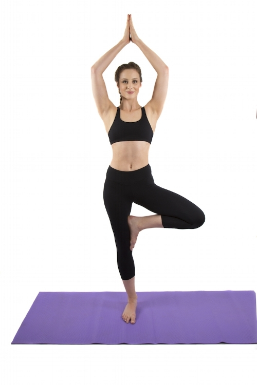

-

YogaBakthasana
Improved flexibility is one of the first and most obvious benefits of yoga. But if you stick with it, you'll notice a gradual loosening, and eventually, seemingly impossible poses will become possible.
More info -

Yantra Aasana
. Poor posture can cause back, neck, and other muscle and joint problems. As you slump, your body may compensate by flattening the normal inward curves in your neck and lower back.
More info -
Bhujangasanam
In an unpublished study conducted at California State University, Los Angeles, yoga practice increased bone density in the vertebrae. Yoga's ability to lower levels of the stress hormone cortisol .
More info